Writing Your First ImageJ Macro
🧠 What is a Macro?
A macro is an automated input sequence that imitates keystrokes or mouse actions. Instead of clicking around manually, you can write a macro to:
Repeat tasks on many images. How many times do you click split channels > max projection over and over…
Streamline analysis and saving of results
Automate/Semi-automate analysis
Build reproducible analysis pipelines
In FIJI, you write macros in a special scripting language called the ijm language. You do not need to know how to ‘code’ to generate a macro in FIJI. However, learning some basics of macro syntax and workflow can improve the capacity to modify, debug (errors happen all too often), and fully automate analysis routines.
The IJM language was actually the first coding language I learnt. It is a great language to learn for beginner coders or the experienced!
✅ Tips Before Writing Your First Macro
- Coding is unforgiving. It needs to be a certain structure to work well.
Spelling is critical (files and file would specify different variables).
Capital Letters are important (Image1 is not the same as image1)
Use comments to help you (and others) understand your code. Comments start a line with // and are in green. These are not executed in the code.
Each line ends with ;
ImageJ is open source (free) and people will help you if you have a question
- Stack Overflow
- Image.SC
Don’t post your own data unless necessary (Use ImageJ sample images)
🔎 File > Open SamplesI clearly wrote this a few years ago… ChatGPT is also a great place to get help.
Use the Macro Recorder to capture your actions as code.
🔎 Plugins > Macros > Record...Test code on one image first.
Save the macro with the .ijm extension.
✏️ Let’s Create a Macro
Let’s write a macro, a small one first. Go to this folder and download the sample images.
Open FIJI
Drag and drop the sample Image “sample-image1” into FIJI
🔎 Plugins > Macros > Record…
A Record Window will pop-upThe record window is your best friend. It will record all the actions you take in FIJI and convert them into code. This is a great way to learn how to write macros, as you can see the code that corresponds to each action you take.
Click on the opened image
🔎 Image > Stacks > Z Project…
run("Z Project...", "projection=[Max Intensity]");- 🔎 Image > Colour > Split Channels
run("Split Channels");- Click on Recorder Window. Click Create
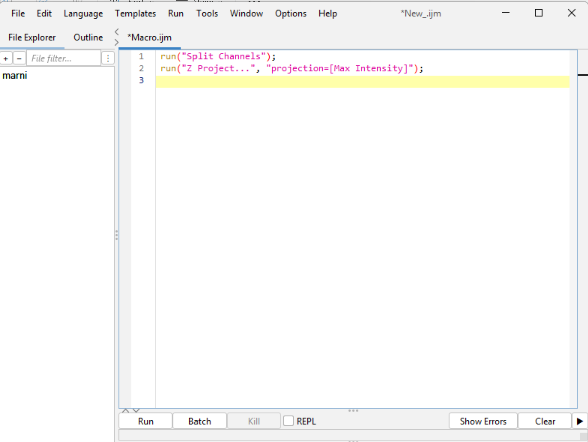
Open a second Image (sample-image2)
Click Run. So quick!
Save the new macro. 🔎 File > Save As… > max-projection_split-channels.ijm
✅ Done!
✏️ Let’s Create a Macro - A Bit More…
Now we are going to add a bit more complexity. Close all open widnows in FIJI, we need a fresh start.
Drag and Drop Image “sample-image1” into FIJI
🔎 Plugins > Macros > Record…
Select opened image by clicking on it. Then 🔎 Image > Stacks > Z Project… > Max Intensity
run("Z Project...", "projection=[Max Intensity]");- 🔎 Image > Color > Split Channels
run("Split Channels");- Select Channel 3 (Red Channel)
selectImage("C3-MAX_sample-image1.tif");- 🔎 Process > Filters > Unsharp Mask… (Radius 1, Mask Weight 0.60)
run("Unsharp Mask...", "radius=1 mask=0.60");- 🔎 Process > Binary > Make Binary
setOption("BlackBackground", true);
run("Convert to Mask");- 🔎 Analyze > Analyze Particles… (select options display results, clear results, summarize, add to manager, exclude on edges)
run("Analyze Particles...", " show=Overlay display exclude clear summarize add");- Select Window “Results”. 🔎 File > Save As > Results… > Name results file. This filepath will be different for you.
saveAs("Results", "C:/Users/marni/ImageJ Macros/ImageJ Macro Tutorial/sample-images/Results.csv");- Select Window “Summary”. 🔎 File > Save As > Results… > Name summary file. This filepath will be different for you.
saveAs("Results", "C:/Users/marni/ImageJ Macros/ImageJ Macro Tutorial/sample-images/Summary.csv");- Go to recorder, delete any accidental lines of code by highlighting them > delete. Then press create.
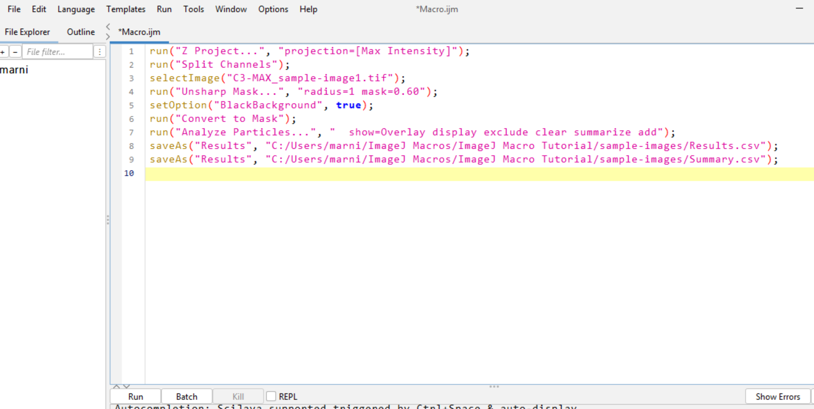
Close all windows except this macro. To close all open images we can do this quickly using one line of code in a new macro! 🔎 File > New > close(“*”); > run.
Delete Results and Summary files from your folder.
Drag and drop the same image in (It works). You should see the saved csv files in the specified folder.
Close all windows except the macro window.
Drag and drop a new image in “sample-image2”. An error appears.
No Window with the title "sample-image2" found.The macro is looking for our first image (sample-image1) not the second (sample-image2).
💡 We need to make the code generic!
🔥 Making a Macro Generic
This enables you to perform your macros, without having to specify the image name manually every time.
A reminder:
When writing code in the ImageJ language all lines must end with a semi-colon (;)
Code is case sensitive (Image1 is different to image1).
A lot of errors can be fixed by checking these two things.
Using the existing macro:
- On the very first line add:
title = getTitle();getTitle() is a built-in function that returns the name of the currently active image.
title is a variable — it holds the result of the function.
The = sign assigns the value. Think of ‘title’ like a labeled box that now holds the image’s name. You can reuse this value later in your macro, for example, when saving results using the image name. Anywhere we have our image name – we can change to title…
💡 Tip: You can name your variables anything (like imgName, filename, etc.), but title is a good descriptive choice here since we’re storing the image title.
| Rule | Example | Notes |
|---|---|---|
| 1. Must start with a letter | cellCount |
✅ OK |
| 2. Can contain letters, numbers, or underscores | image_01, threshold_level |
✅ OK |
| 3. Cannot contain spaces | ❌ cell count |
Use underscores or camelCase instead |
| 4. Cannot start with a number | ❌ 1stImage |
✅ firstImage |
| 5. Avoid symbols or punctuation | ❌ title!, my-variable. |
|
| 6. Case-sensitive | Title ≠ title |
Title and title are different |
| 7. Avoid using built-in keywords or function names | ❌ run, print, getTitle |
These are reserved by ImageJ |
| Tip | Why It Helps |
|---|---|
| ✅ Use descriptive names | e.g., nucleiCount, imageTitle |
✅ Use camelCase or snake_case for readability |
e.g., cellArea, cell_area |
| ✅ Be consistent across your macro | Makes your code easier to read and maintain |
❌ Avoid names like x, y, a unless for quick loops |
Not informative |
- Now we need to change the image name in the selectImage() line.
selectImage(“C3-MAX_” + title);The + sign is used to concatenate (join) strings (words in ” ” and variables) together. The string “C3-MAX_” is joined with the value of the variable title that we assigned at the start of the macro.
- Open sample-Image1. Press Run. Check output files. The macro should run with no errors. Repeat for sample-Image2. Check output files.
However…
Currently our results are being saved as “Results” and “Summary”, and these are being overwritten every time we run a new image. It is best to include the image name when saving the results, so that they are unique and do not get overwritten.
- We can change:
saveAs("Results", "C:/Users/marni/ImageJ Macros/ImageJ Macro Tutorial/sample-images/Results.csv");To:
selectWindow("Results");
saveAs("Results", "C:/Users/marni/ImageJ Macros/ImageJ Macro Tutorial/sample-images/" + "Results_" + title + ".csv");Here we are selecting the Results Window, and saving it to the destination folder with the name Results_sample-image1.csv or Results_sample-image2.csv. The same can be done for the Summary file.
- Change the Summary file name to:
selectWindow("Summary");
saveAs("Results", "C:/Users/marni/ImageJ Macros/ImageJ Macro Tutorial/sample-images/" + "Summary_" + title + ".csv");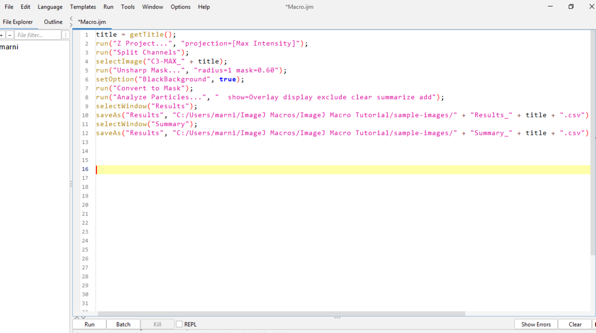
Strings are pieces of text. In ImageJ, strings are enclosed in double quotes (“). For example,”Hello World” is a string. You can concatenate strings using the + operator.
Variables are like boxes that hold values. You can create a variable to store a string, number, or other data types. For example, myString = "Hello" creates a variable called myString that holds the string “Hello”.
Variables do not need to be in quotes. Strings must be in quotes. A variable can be a string, but a string cannot be a variable. For example, myString = "Hello" is correct, but "myString" = "Hello" is incorrect.
- Save the macro. Close all windows except the macro window. Drag and drop sample-image1 and sample-image2 into FIJI. Check the output files.
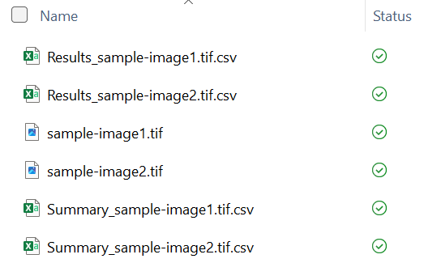
Create a macro that stores a name in a variable and prints it. What is wrong with the following code? What is the error message?
"name" = "Mitochondria";
print(name);🔍 Show Answer and Explanation
Macro Error:
Statement cannot begin with ‘=’ in line 1.
"name" = "Mitochondria"; // ❌ Invalid syntax
name = "Mitochondria"; // ✅ Variable name is unquoted
print(name); // ✅ Prints the value of the variableThis error occurs because the macro is trying to assign a value to a string literal (the quoted text “name”) instead of a variable. In ImageJ macros, variable names should not be enclosed in quotes.
Now try this code:
name = mitochondria
print(name)What error message do you expect?
🔍 Show Answer and Explanation
Macro Error: Undefined variable in line 1.
This error occurs because the macro is trying to assign a variable (mitochondria - note it is not in quotes) to a variable name (name). Because we haven’t defined the variable mitochondria, the macro doesn’t know what it is. In ImageJ macros, variable names should be defined before they are used. To fix this, we can either define the variable mitochondria or use a string literal (e.g., “mitochondria”) instead.
Create a new macro with the following code:
title = "my image"
print(title);What is wrong with the code? What is the error message?
🔍 Show Answer and Explanation
Macro Error: ‘;’ expected in line 1.
title = "my image" // ❌ Missing semicolon
title = "my image"; // ✅ Corrected code
print(title); // ✅ Prints the value of the variableThis error occurs because the macro is missing a semicolon at the end of the first line. In ImageJ macros, each statement must end with a semicolon.
Create a new macro with the following code:
directory = getDirectory("Choose Directory";
print(directory);What is wrong with the code? What is the error message?
🔍 Show Answer and Explanation
Macro Error: `‘)’ expected in line 1.
directory = getDirectory("Choose Directory"; // ❌ Missing closing parenthesis
directory = getDirectory("Choose Directory"); // ✅ Corrected code
print(directory); // ✅ Prints the value of the variableThis error occurs because the macro is missing a closing parenthesis at the end of the first line. In ImageJ macros, each function call must have matching parentheses.
Create a new macro with the following code:
threshold = 128;
threshold = "Low";
print(threshold);What type of value does threshold hold?
🔍 Show Answer and Explanation
Initially, threshold holds a number (128)…
…but then it is overwritten with a string “Low”.
Result: the final print statement will output a string, not a number. This won’t crash the macro, but it can lead to unexpected behavior if you later try to use threshold as a number (e.g., in math operations).
Try this macro code:
run = "Start";
print(run);Will this code work? What colour will the text be?
🔍 Show Answer and Explanation
Macro Error: ‘(’ expected in line 1.
run is a built-in function name in ImageJ macros — using it as a variable name overwrites or shadows that function. You can tell its a function name because it is written in gold. Variables should be black. The macro is expecting the function run() and so is why the error message shows ‘(’ expected.
❌ Don’t use built-in function names like:
run
print
getTitle
showMessage
✅ Instead, choose a different name:
run_status = "Start";
print(run_status);Great, I now have my files saved in this filepath. I can now run this macro on any image I want, and it will save the results in the same file path with the image name included. This is a great start to automating analysis. But, what if I want to use this macro and save the results in a different folder each time it is run?
📂 Saving Results using getDirectory()
We can use the built-in function getDirectory() to specify the folder we want to save our results in. This function allows us to select a directory using a file dialog box. This way, we do not need to write out the entire filepath each time we run the macro for different folders.
- Using the existing macro, at the start add:
dir = getDirectory("Choose Destination Directory");This will open a file dialog box that allows you to select the destination folder. The selected folder filepath will be stored in the variable dir.
- Now we need to change the saveAs() lines to:
selectWindow("Results");
saveAs("Results", dir + "Results_" + title + ".csv");
selectWindow("Summary");
saveAs("Results", dir + "Summary_" + title + ".csv");This simplifies things a lot. Now, when you run the macro, it will prompt you to select a destination folder. The results will be saved in that folder with the image name included.
- Save the macro. Close all windows except the macro window. Drag and drop sample-image1 and sample-image2 into FIJI. Run the macro on both images. Try saving the results in a different folder to the one you originally specified to see if it works.
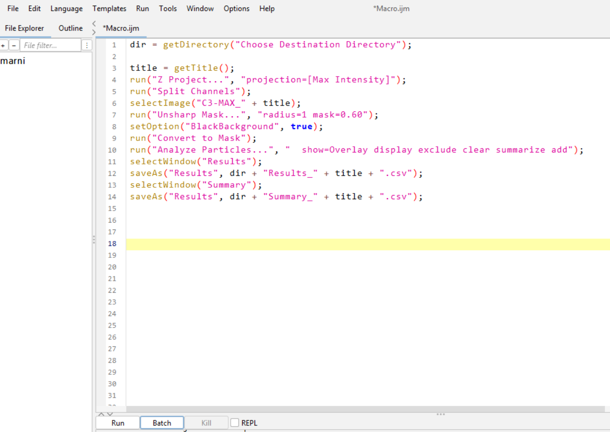
Often, you may want to save other types of results, such as images or text files. You can use the same method to specify the directory and filename. For example to save a processed image as a tiff file:
saveAs("Tiff", dir + "processed-image_" + title + ".tif");Or to save the regions of interest (ROIs) selected by analyze particles:
roiManager("Save", dir + title + "_RoiSet.zip");📌 Tip: Always ensure you run saveAs() after processing is complete, and that the correct image window is active.
But wait! What if I want to count objects in a different channel? I.e. for one experiment my object of interest was imaged in C2, and some in C3. I want to be able to specify which channel I want to count objects in, without having to change the code each time manually.
🔄 Making the Macro More Flexible
We can use the built-in function getNumber() to prompt the user for input. This allows us to specify which channel we want to count objects in.
- Using the existing macro, before the line title = getTitle(); add:
Dialog.create("Specify Channel Numbers");
Dialog.addNumber("Channel number for analyze particles", 1);
Dialog.show();
channel_num = Dialog.getNumber();This will open a dialog box that prompts the user to enter a number. The entered number will be stored in the variable channel_num. This number will be used to specify which channel to analyze and count objects from.
Dialog.create() creates a new dialog box with the title “Specify Channel Numbers”. Dialog.addNumber() adds a number input field to the dialog box with the label “Channel number for analyze particles” and a default value of 1. Dialog.show() displays the dialog box to the user. channel_num = Dialog.getNumber() retrieves the number entered by the user in the dialog box.
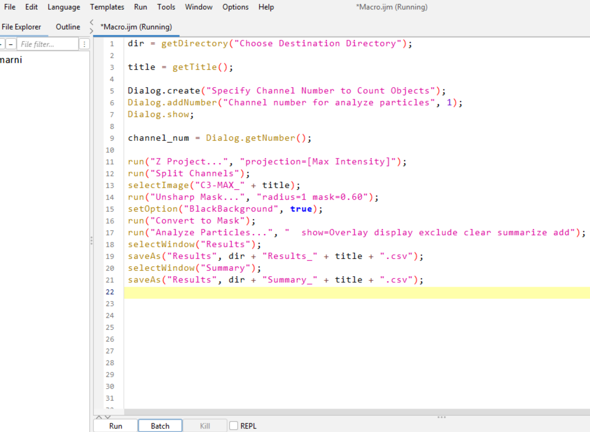
- Now we need to change the selectImage() line from:
selectImage("C3-MAX_" + title);to:
selectImage("C" + channel_num + "-MAX_" + title);This will select the channel specified by the user in the dialog box. The + sign concatenates the string “C” with the value of channel_num and the string “-MAX_” with the value of title.
- Save the macro. Close all windows except the macro window. Drag and drop sample-image1 into FIJI. Run the macro by choosing 1 as the channel number. Then run the macro again by choosing 2 when prompted. Check the output files.
ImageJ macros support a wide range of dialog inputs using Dialog.add...() functions.
Here’s a summary of commonly used options and how to save their values:
| Function | Description | Example | Saving the Input |
|---|---|---|---|
Dialog.addNumber() |
Numeric input field | Dialog.addNumber("Channel number", 1) |
channel_num = Dialog.getNumber(); |
Dialog.addString() |
Text input field | Dialog.addString("Channel name", "Mitochondria") |
channel_name = Dialog.getString(); |
Dialog.addCheckbox() |
Checkbox (true/false) | Dialog.addCheckbox("Enhance Contrast", true) |
enhance = Dialog.getCheckbox(); |
Dialog.addChoice() |
Dropdown menu | Dialog.addChoice("Options", newArray("opt1", "opt2"), "opt1") |
selected_option = Dialog.getChoice(); |
Dialog.addHelp() |
Help button with URL | Dialog.addHelp("https://...") |
(No value to retrieve) |
Dialog.addSlider() |
Slider input (min, max, default) | Dialog.addSlider("Particle Size", 1, 1000, 312) |
particle_size = Dialog.getSlider(); |
Dialog.addRadioButtonGroup() |
Radio button grid | Dialog.addRadioButtonGroup("Cities", newArray("NY", "Paris"), 2, 1, "Paris") |
selected_city = Dialog.getRadioButton(); |
You can mix and match these input types in a single dialog box to collect multiple parameters from the user.
📌 Don’t forget to call Dialog.show(); before retrieving values!
These tools help create rich, interactive macro interfaces to guide the user through parameter selection. You can mix these in a single dialog box to collect different types of input from the user. Give it a try by adding these options to your macro, and see what they look like.
Dialog.create("Create a dialog box");
Dialog.addNumber("Channel number for analyze particles", 1);
Dialog.addString("Channel name", "Mitochondria")
Dialog.addCheckbox("Enhance Contrast", true);
Dialog.addChoice("Multiple Options", newArray("option1","option2","option3"), "option1");
Dialog.addHelp("https://github.com/MarnieMaddock?tab=repositories");
Dialog.addSlider("Particle Size", 1, 1000, 312);
items = newArray("New York", "London", "Paris", "Tokyo");
Dialog.addRadioButtonGroup("Cities", items, 2, 2, "Paris");
Dialog.show();Let’s create a dialog box that allows the user to specify different options for the analyze particle function and extract the options selected by the user by assigning the options to variables. Then run analyze particles using the options selected by the user.
The user should be able to:
- Set the minimum size of particles to detect
- Set the minimum circularity of particles to detect
- Set the maximum size of particles to detect
Use the dialog inputs to control how run("Analyze Particles...") is executed. Look at your previous analyze particles function as a guide on the format. Remember to concatenate the strings and variables together using + to create the correct command.
🔍 Show Solution
// Create dialog box
Dialog.create("Analyze Particles Options"); // Dialog box pop-up
Dialog.addNumber("Minimum Particle Size", 0); // Default set to 0
Dialog.addNumber("Minimum circularity", 0); // Default set to 0
Dialog.addNumber("Maximum circularity", 1); // Default set to 1
Dialog.show(); // Show dialog box
// Get user input by svaing the options to variables
min_size = Dialog.getNumber(); // Get minimum size
min_circularity = Dialog.getNumber(); // Get minimum circularity
max_circularity = Dialog.getNumber(); // Get maximum circularity
// Build the options string using the numbers supplied
ap_options = "size=" + min_size + "-Infinity circularity=" + min_circularity + "-" + max_circularity + " show=Overlay display exclude clear summarize overlay add";
run("Analyze Particles...", ap_options);Test this out yourself. Change the minimum size, minimum circularity, and maximum circularity to see how it changes the results.
💬 Adding Comments
Now that we have written a working macro, we need to add some comments so that others, and your future self can understand what your code is doing. Comments can be added by using // at the start of the line. These will not be read as excutable code. This is a good habit to get into when writing code, as it makes it easier to understand and debug later on.
First start by adding comments to specify that this code is to be run in FIJI. I then add my name, date, and a title of the macro.
// USAGE: Use in FIJI
//
// Author: Marnie L Maddock (University of Wollongong)
// mmaddock@uow.edu.au, mlm715@uowmail.edu.au
// 5.07.2024
// Count number of Objects in a ChannelLonger comments can be added by using /* and */ at the start and end of a large piece of text. This is useful for adding longer descriptions of what the macro does, or how to use it.
/*
This macro will take an image and:
1. Run a max projection,
2. Split the channels,
3. Unsharp mask,
4. Convert to binary,
5. Analyze particles (count objects),
6. Save the results and summary files.
*/Now we need to add comments to each section of the code. For example:
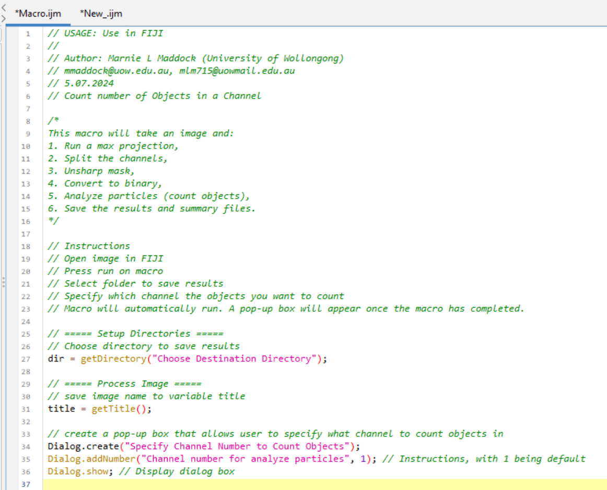
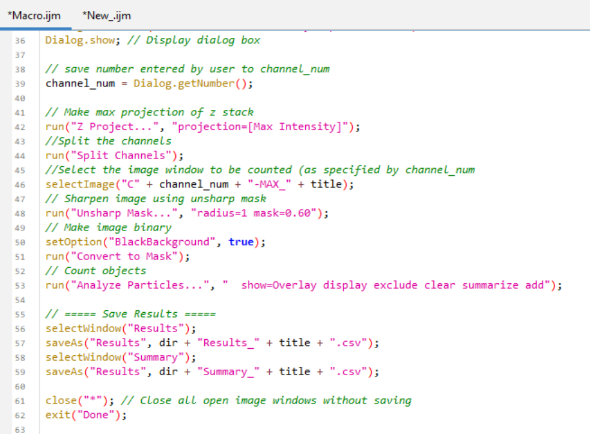
⏸️ Pausing Your Macro
When writing macros, sometimes you don’t want everything to run automatically. You might want to:
Pause and let the user inspect an image manually
Allow manual ROI drawing before continuing
Add a checkpoint to confirm results before the next step
Give instructions to the user
This is where waitForUser() comes in — it temporarily pauses the macro until the user clicks OK.
✅ Basic use:
waitForUser("Click OK when ready to continue");This will pause the macro and show a dialog with the message “Click OK when ready to continue”. Write this in a new macro window and see what happens when you press run.
✅ With a title and message:
waitForUser("Step 2", "Now draw an ROI on the image. Click OK when finished.");This will show a dialog with the title “Step 2” and the message “Now draw an ROI on the image. Click OK when finished.” The macro will pause until you click OK.
Create a new macro file and copy in the following:
run("Blobs (25K)");
run("8-bit");
// Instruct user to draw a selection
waitForUser("Step 1", "Please draw an ROI (e.g. a rectangle) on the image and then click OK.");
// Continue with analysis
run("Measure");This macro will open the Blobs (25K) image, convert it to 8-bit, and then pause to let the user draw a selection. After clicking OK, it will measure the selected area.
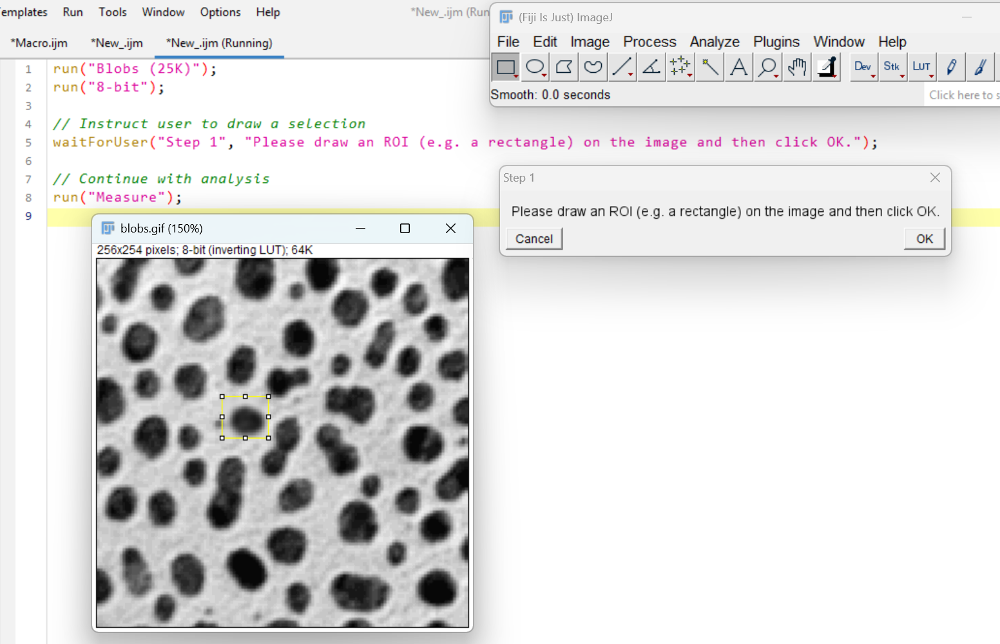
Another way to add a pause is to use the showMessage() function. Use showMessage() when you want to:
Give instructions or context before running a step
Confirm parameters before analysis
Display a simple summary to the user
Provide educational or progress prompts
Unlike waitForUser(), it’s often used just to notify, not necessarily pause deeply for user interaction.
✅ Simple message
showMessage("This macro will convert your image to binary.");Try this out yourself:
showMessage("Step 1", "This step will threshold your image.\nPlease ensure it's 8-bit grayscale.");First argument is the title, second is the message. You can use slash n for line breaks.
There is one more way to pause a macro. We can use the wait() function to automtically pause the macro for a specified amount of time.
Use wait() when you want to:
Pause briefly between steps for visual effect
Give the user a moment to see changes before moving on
Allow your computer to complete processing before moving on (important when svaing large images or files)
Unlike waitForUser() or showMessage(), wait() does not require the user to click OK — it just pauses for a set time in milliseconds and moves on automatically.
wait(1000); // Waits for 1 second
wait(500); // Waits for 0.5 seconds
wait(3000); // Waits for 3 secondsGive this code a try:
run("Blobs (25K)");
run("8-bit");
run("Gaussian Blur...", "sigma=2");
// Pause for 3 seconds before the next step
wait(3000);
run("Make Binary");wait() is also useful for debugging, as it allows you to see the image before the next step. This is one of my favourite debugging tools.
🌀 Using Loops and Conditional Statements
In macro writing, loops and conditions are essential tools that let you repeat actions, check for specific conditions, and apply different steps depending on the data. These loops start with for, and conditions start with if or else.
| Structure | What it Does | Example Use Case |
|---|---|---|
for loop |
Repeats a block of code for a list of items | Loop through channels or image slices |
if |
Checks a condition and runs code if true | Only threshold if a checkbox is selected |
else |
Runs alternative code if the if fails |
Do a different filter if one is unchecked |
if (...) && (...) |
Logical AND — all conditions must be true | Only run if two options are selected |
if (...) || (...) |
Logical OR — at least one condition is true | Run if either contrast or sharpness is checked |
For Loops
Loops help us repeat the same action multiple times. Let’s write a loop that prints “Hello!” three times.
Open a new macro window in FIJI
Write the following code:
for (i = 0; i < 3; i++) {
print("Hello!");
}What output did you get? Hello! Should have printed 3x in the log.
🔍 Show Explanation
What does for (i = 0; i < 3; i++) mean? This is a for loop — a way to repeat something multiple times.
forThis starts the loopiIs a variable. It acts like a counter that keeps track of which loop number you’re on. i is short for index or iterator — it’s just a tradition in programming. It is common to use i, j, k, etc. as loop variables, but you could choose any name. e.g.counter,index, etc:for (counter = 0; counter < 3; counter++)i = 0Start by setting i to 0 — this is the first counti < 3Keep repeating as long as it is less than 3i++After each loop, add 1 to i (same as i = i + 1)Think of i as what number am I on right now?
| Loop | Value of i | What gets printed |
|---|---|---|
| 1st loop | 0 | 0 |
| 2nd loop | 1 | 1 |
| 3rd loop | 2 | 2 |
After that, i becomes 3, and the loop stops — because the condition i < 3 is no longer true.
i Do?
Let’s explore what the variable i does in a loop.
Try running this macro:
for (i = 0; i < 5; i++) {
print("Loop number: " + i);
}Before you run it, can you guess what it will print?
🔍 Show Solution
This loop runs 5 times. The value of i changes with each loop:
Loop number: 0
Loop number: 1
Loop number: 2
Loop number: 3
Loop number: 4Let’s try another example:
for (i = 1; i <= 4; i++) {
print("Saving image as: Image_" + i + ".tif");
}What do you think this will print?
🔍 Show Solution
This loop runs 4 times. The value of i changes with each loop:
Saving image as: Image_1.tif
Saving image as: Image_2.tif
Saving image as: Image_3.tif
Saving image as: Image_4.tifHow could you alter the loop to save images as Image_1.tif, Image_2.tif, Image_3.tif, and Image_4.tif to a directory?
🔍 Show Solution
for (i = 1; i <= 4; i++) {
saveAs("Tiff", dir + "Image_" + i + ".tif");
print("Saving image as: Image_" + i + ".tif");
}This code will return an error if the directory is not defined. But this is how you could apply this concept in working macros.
Now let’s use a loop to access items from an array. Imagine you have an array of stains used in your experiment:
stains = newArray("DAPI", "BRN3A", "ISLET1");Write a loop that prints each stain name. Fill in the blanks.
stains = newArray("BRN3A", "ISLET1", "DAPI");
for (i = 0; i < ________; i++) {
print("Processing stain: " + _______);
}🔍 Show Solution
stains = newArray("BRN3A", "ISLET1", "DAPI");
for (i = 0; i < stains.length; i++) {
print("Processing stain: " + stains[i]);
}Processing stain: BRN3A
Processing stain: ISLET1
Processing stain: DAPIBreakdown:
i = 0starts at the first item in the array. stains[0] is “BRN3A”i < stains.lengthkeeps going as long as i is less than the total number of items in the array (3 in this case).stains.lengthis the number of items (in this case: 3). By adding.lengthto a variable, you can find out how many items are in that variable..lengthis a property of an array in ImageJ macros (and many programming languages).i++increases i by 1 after each loop iteration (moves to the next stain).
You’ve split a multi-channel image and want to process only selected channels, like C1 and C3.
Use a loop to:
- Split the channels using
Split Channels
- Loop through two channels e.g. (C1 and C3)
- Apply a Median filter and Make Binary to each
Fill in the blanks below:
title = ___________; // Get the image title
run("____________"); // Split channels into separate windows
// List of channels you want to process
channelsToProcess = newArray("1", "3");
for (i = 0; i < ___________; i++) {
channel = ____________;
// Construct the window name based on how ImageJ names split channels
fullTitle = "C" + channel + "-" + _______;
selectWindow(fullTitle);
run("Median...", "radius=2");
setOption("BlackBackground", true);
run("Convert to Mask");
}🔍 Show Solution
// Get the original image title (e.g., "sample.tif")
title = getTitle();
// Split the image into channels (creates C1-<title>, C2-<title>, etc.)
run("Split Channels");
// List of channels you want to process
channelsToProcess = newArray("1", "3");
for (i = 0; i < channelsToProcess.length; i++) {
channel = channelsToProcess[i];
// Construct the window name based on how ImageJ names split channels
fullTitle = "C" + channel + "-" + title;
selectWindow(fullTitle);
run("Median...", "radius=2");
setOption("BlackBackground", true);
run("Convert to Mask");
}This code will process only the specified channels (C1 and C3) by applying a median filter and converting them to binary masks. The loop iterates through the channelsToProcess array, constructs the window name for each channel, and applies the desired processing steps.
If Else Statements
If statements are used to check if a condition is true or false. If the condition is true, the code inside the if statement will run. This is key for customising your workflow based on your data.
An if/else statement lets you run one block of code if a condition is true, and a different block if it’s false. For example:
if (slices > 1) {
run("Z Project...", "projection=[Max Intensity]");
rename(title);
} else {
print("Single slice image, no projection needed");
}This code checks if the number of slices is greater than 1. If it is, it runs a max projection and renames the image. If not, it prints a message saying no projection is needed.
Your task is to write a macro that:
Gets the number of Z slices in the image.
If there are more than one, runs a Z projection.
Otherwise, split channels.
Test it on sample-image1.tif and sample-image3.tif
// Get image dimensions, where 'slices' is the number of Z slices
Stack.getDimensions(width, height, channels, slices, frames);
// Replace the placeholder condition and commands as needed
if (__________) {
run("Z Project...", "projection=[Max Intensity]");
print("Applied Z Projection");
} else {
run("_________");
print("Split channels");
}🧠 Hint: Replace the blank with a condition that checks if slices is greater than 1.
🔍 Show Solution
Stack.getDimensions(width, height, channels, slices, frames);
if (slices > 1) {
run("Z Project...", "projection=[Max Intensity]");
print("Applied Z Projection");
} else {
run("Split Channels");
print("Split channels");
}This code checks the number of slices in the image. If there are more than one slice, it applies a Z projection. If not, it splits the channels.
Let’s try and integrate some concepts we explored earlier:
Let’s give the user a choice! Open sample-image1.tif. Use a dialog box to let the user enter a number between 1 and 10.
- If the number is 5 or greater, apply a Unsharp Mask
- If it’s less than 5, apply a Split Channels
Fill in the blanks:
Dialog.create("Choose a filter");
Dialog.________("Enter a number (1–10)", 5);
Dialog.show();
value = Dialog.getNumber();
if (__________________) {
run("Unsharp Mask...", "radius=1 mask=0.60");
print("Applied Unsharp Mask");
} ______ {
run("Split Channels");
print("Applied Split Channels");
}🧠 This is a great way to customize processing based on user-defined settings. To write is something is greater than or equal to something else, use >=. To write is something is less than or equal to something else, use <=.
🔍 Show Solution
Dialog.create("Choose a filter");
Dialog.addNumber("Enter a number (1–10)", 5);
Dialog.show();
value = Dialog.getNumber();
if (value >= 5) {
run("Unsharp Mask...", "radius=1 mask=0.60");
print("Applied Unsharp Mask");
} else {
run("Split Channels");
print("Applied Split Channels");
}This code creates a dialog box that prompts the user to enter a number between 1 and 10. If the number is 5 or greater (>=), it applies Unsharp Mask. If the number is less than 5, it applies split channels.
Let’s try another one. Let the user choose between two image filters using a dropdown menu by creating a dialog box.
- If the user selects “Gaussian”, apply a Gaussian Blur
- If the user selects “Median”, apply a Median Filter
Complete the macro below:
Dialog.create("Choose a filter type");
Dialog.________("Select filter", __________("Gaussian", "Median"), "Gaussian");
Dialog._____();
choice = Dialog.getChoice();
if (________________________) {
run("Gaussian Blur...", "sigma=2");
print("Applied Gaussian Blur");
} else {
run("Median...", "radius=2");
print("Applied Median Filter");
}🧠 Use == to compare the selected value with a string like “Gaussian”.
🔍 Show Solution
Dialog.create("Choose a filter type");
Dialog.addChoice("Select filter", newArray("Gaussian", "Median"), "Gaussian");
Dialog.show();
choice = Dialog.getChoice();
if (choice == "Gaussian") {
run("Gaussian Blur...", "sigma=2");
print("Applied Gaussian Blur");
} else {
run("Median...", "radius=2");
print("Applied Median Filter");
}This code creates a dialog box that lets the user choose between “Gaussian” and “Median” filters. If the user selects “Gaussian”, it applies a Gaussian Blur. If the user selects “Median”, it applies a Median Filter.
What if you don’t want to apply a filter? We need a none option. To do this we can use an else if statement. This is a way to check multiple conditions in a row.
Update your macro so the user can choose from three options:
- “Gaussian” → apply a Gaussian Blur
- “Median” → apply a Median Filter
- “None” → apply no filter, just print a message
Use else if to handle the third case.
Dialog.create("Choose a filter type");
Dialog.addChoice("Select filter", _______________________________________, "Gaussian");
Dialog.show();
choice = Dialog.getChoice();
if (choice == "Gaussian") {
run(________________, "sigma=2");
print("Applied Gaussian Blur");
} else if (choice == "__________") {
run("______________", "radius=2");
print("Applied Median Filter");
} else {
print("No filter applied.");
}🔍 Show Solution
Dialog.create("Choose a filter type");
Dialog.addChoice("Select filter", newArray("Gaussian", "Median", "None"), "Gaussian");
Dialog.show();
choice = Dialog.getChoice();
if (choice == "Gaussian") {
run("Gaussian Blur...", "sigma=2");
print("Applied Gaussian Blur");
} else if (choice == "Median") {
run("Median...", "radius=2");
print("Applied Median Filter");
} else {
print("No filter applied.");
}This code creates a dialog box that lets the user choose between “Gaussian”, “Median”, and “None” filters. If the user selects “Gaussian”, it applies a Gaussian Blur. If the user selects “Median”, it applies a Median Filter. If the user selects “None”, it prints a message saying no filter was applied.
The power of loops and conditions is that they allow you to create flexible and dynamic macros. You can adapt your code to different situations, making it more efficient and user-friendly. By combining both loops and conditions, you can create complex workflows that can handle a variety of tasks.
Let’s say you have 3 channels (e.g., C1, C2, C3) and you want to choose which filter to apply to each channel. Using sample-image3.tif.
Split image into separate channel windows (C1-…, C2-…, etc.)
Ask the user to select a filter type using Dialog.addChoice()
Create a list of channel numbers in an array (e.g., “1”, “2”, “3”)
Use a for loop to loop through each channel
Use if, else if, and else inside the loop to apply the chosen filter to each channel
Your task is to:
- Ask the user which filter to apply:
"Gaussian","Median", or"None" - Loop through channels
1to3 - Apply the selected filter to each channel window
Fill in the blanks below:
// Ask the user which filter to apply
Dialog.______("Filter Selection");
Dialog.______("Choose filter", newArray("Gaussian", "Median", "None"), "Gaussian");
Dialog.___();
choice = Dialog.________();
// List of channels
channels = newArray("1", "2", "3");
title = getTitle(); // Base title of the original image
run("Split Channels"); // Split channels into separate windows
// Loop through channels
for (i = _; i < channels._____; i++) {
channel = channels[i];
fullTitle = "C" + channel + "-" + title;
selectWindow(fullTitle);
___ (choice == "Gaussian") {
run("Gaussian Blur...", "sigma=2");
print("Applied Gaussian to C" + channel);
} ______ ______ (choice == "Median") {
run("Median...", "radius=2");
print("Applied Median to C" + channel);
} else {
print("No filter applied to C" + channel);
}
}🔍 Show Solution
// Ask the user which filter to apply
Dialog.create("Filter Selection");
Dialog.addChoice("Choose filter", newArray("Gaussian", "Median", "None"), "Gaussian");
Dialog.show();
choice = Dialog.getChoice();
// List of channels
channels = newArray("1", "2", "3");
title = getTitle(); // Base title of the original image
run("Split Channels"); // Split channels into separate windows
// Loop through channels
for (i = 0; i < channels.length; i++) {
channel = channels[i];
fullTitle = "C" + channel + "-" + title;
selectWindow(fullTitle);
if (choice == "Gaussian") {
run("Gaussian Blur...", "sigma=2");
print("Applied Gaussian to C" + channel);
} else if (choice == "Median") {
run("Median...", "radius=2");
print("Applied Median to C" + channel);
} else {
print("No filter applied to C" + channel);
}
} // close bracket for for loopDialog.addChoice(...): lets the user select a filter option
choice = Dialog.getChoice(): stores that selection
channels = newArray(...): defines which channels to loop through
for (...): goes through each channel one at a time
selectWindow(...): activates each channel image window
if/else: chooses what filter (if any) to apply
Give it a go trying different options.
Ok, but what if I want to apply different filters to different channels? Now we are entering the realm of channel-specific processing logic — where the user can apply different filters to different channels in a single macro. This is a fantastic way to combine:
✅ A for loop
✅ An if/else if decision tree
✅ A dialog-driven, per-channel configuration
Let’s say the user wants:
🟢 C1 → Apply Median filter
🔵 C2 → Apply Unsharp Mask
⚫ C3 → Apply Make Binary
We’ll create:
A dialog with three dropdowns, one per channel
A for loop to go through each channel
A separate filter choice for each channel using if / else if / else inside the loop
Let the user choose a specific filter for each channel using dropdown menus, then loop through each channel and apply the correct filter.
// === Create dialog with a dropdown for each channel ===
Dialog.create("Select Filter for Each Channel");
Dialog.addChoice("C1 Filter", newArray("Median", "Unsharp", "Binary", "None"), "Median");
Dialog.addChoice("C2 Filter", newArray("Median", "Unsharp", "Binary", "None"), "Unsharp");
Dialog.addChoice("C3 Filter", newArray("Median", "Unsharp", "Binary", "None"), "Binary");
Dialog.show();
// === Store choices for each channel ===
c1_filter = Dialog.__________;
c2_filter = Dialog.__________;
c3_filter = Dialog.__________;
// === Array of filters in the same order as channels ===
filters = newArray(________, _________, _________);
channels = newArray("1", "2", "3");
title = _________; // base image name
run("Split Channels"); // Split channels into separate windows
// === Loop through channels ===
for (_____;_________________;_______) {
channel = channels[i];
filter = filters[i];
fullTitle = "C" + channel + "-" + title;
selectWindow(fullTitle);
if (filter ____ "Median") {
run("Median...", "radius=2");
print("Applied Median to C" + channel);
} else if (filter ____ "Unsharp") {
run("Unsharp Mask...", "radius=1 mask=0.6");
print("Applied Unsharp Mask to C" + channel);
} else if (filter ____"Binary") {
run("Make Binary");
print("Applied Binary to C" + channel);
} else {
print("No filter applied to C" + channel);
}
}🔍 Solution
Let the user choose a specific filter for each channel using dropdown menus, then loop through each channel and apply the correct filter.
// === Create dialog with a dropdown for each channel ===
Dialog.create("Select Filter for Each Channel");
Dialog.addChoice("C1 Filter", newArray("Median", "Unsharp", "Binary", "None"), "Median");
Dialog.addChoice("C2 Filter", newArray("Median", "Unsharp", "Binary", "None"), "Unsharp");
Dialog.addChoice("C3 Filter", newArray("Median", "Unsharp", "Binary", "None"), "Binary");
Dialog.show();
// === Store choices for each channel ===
c1_filter = Dialog.getChoice();
c2_filter = Dialog.getChoice();
c3_filter = Dialog.getChoice();
// === Array of filters in the same order as channels ===
filters = newArray(c1_filter, c2_filter, c3_filter);
channels = newArray("1", "2", "3");
title = getTitle(); // base image name
run("Split Channels"); // Split channels into separate windows
// === Loop through channels ===
for (i = 0; i < channels.length; i++) {
channel = channels[i];
filter = filters[i];
fullTitle = "C" + channel + "-" + title;
selectWindow(fullTitle);
if (filter == "Median") {
run("Median...", "radius=2");
print("Applied Median to C" + channel);
} else if (filter == "Unsharp") {
run("Unsharp Mask...", "radius=1 mask=0.6");
print("Applied Unsharp Mask to C" + channel);
} else if (filter == "Binary") {
run("Make Binary");
print("Applied Binary to C" + channel);
} else {
print("No filter applied to C" + channel);
}
}3 dropdowns → user chooses a filter for each channel
The choices are saved into c1_filter, c2_filter, c3_filter
These are combined into an array: filters = newArray(…)
We then loop over the channels (C1, C2, C3) and apply the filter from filters[i]
if / else if / else applies the correct filter, or skips it
💡 Super flexible — you can later add more filters, more channels, or apply this to batch processing!
Formatting Loops and Conditions
When writing loops and conditions, it is important to format them correctly. Here are some tips:
Always check your condition: Ensure your comparison (like
slices > 1) makes sense for your data.Use proper indentation: It makes your code easier to read. Notice how the code inside the loop or condition is indented. This shows that it belongs to that loop or condition.
Test both paths: Make sure your macro works when the condition is both true and false.
Use comments: Add comments to explain what each part of your code does. This is especially helpful for complex loops and conditions.
📊 Working with the Results Table
The results table is a powerful tool in FIJI that allows you to store and analyze data from your images. You can use it to save measurements, counts, and other information about your images.
The Results Table is where ImageJ stores data from tools like:
run(“Measure”)
Analyze Particles
ROI Manager measurements
Intensity profiles and other analysis outputs
You can use macros to:
Read and extract results
Modify values
Save tables to file
Loop through rows to perform calculations
| Function | Purpose |
|---|---|
nResults |
Returns number of rows in the Results Table |
getResult(column, row) |
Gets the value from a specific cell |
setResult(column, row, x) |
Changes a value in the table |
resetResults() Clears the entire table |
|
saveAs("Results", path) |
Saves results to a CSV file |
updateResults() |
Refreshes the table to show changes |
For example:
run("Blobs (25K)");
run("8-bit");
run("Make Binary");
run("Analyze Particles...", "size=0-Infinity show=Overlay display clear summarize");
// Loop through Results Table
for (i = 0; i < nResults; i++) {
area = getResult("Area", i);
print("Object " + (i+1) + " area: " + area);
}This macro opens the Blobs (25K) image, converts it to 8-bit, and analyzes particles. It then loops through the results table and prints the area of each object.
nResults is a built-in variable that contains the number of rows in the results table. You can use it to loop through all the rows and extract data.
getResult("Area", i) gets the area of the object in row i of the results table. You can replace “Area” with other column names to get different measurements.
You can also use the setResult() function to modify values in the results table. Add this code below the above code and check what area the first row is in the results table. It should read 999. updateResults() updates the results table to reflect the changes.
setResult("Area", 0, 999); // Change row 0's "Area" value to 999
updateResults();After analyzing particles, calculate a new column called "Half Area" → it should be half of the "Area" column values.
Complete the loop:
run("Blobs (25K)");
run("8-bit");
run("Make Binary");
run("Analyze Particles...", "size=0-Infinity show=Overlay display clear summarize");
for (i = 0; i < _______; i++) {
area = getResult("________", i);
setResult("Half Area", i, area / 2);
}
__________; // Refresh the table to show the new column🔍 Show Solution
run("Blobs (25K)");
run("8-bit");
run("Make Binary");
run("Analyze Particles...", "size=0-Infinity show=Overlay display clear summarize");
for (i = 0; i < nResults; i++) {
area = getResult("Area", i);
setResult("Half Area", i, area / 2);
}
updateResults();setResult(column, row, value) lets you add or update a value in the Results Table:
column: the name of the column (e.g., “Area”, “Mean”, or your own, like “Half Area”)
row: which row to write into (starting from 0)
value: the number or text to insert
📐 Controlling Output with setMeasurements()
By default, ImageJ might not show all the measurements you want (like Mean, Area, Min, Max, Integrated Density etc.). The setMeasurements() function lets you control what measurements are saved in the Results Table. You can see what measurements are available by going to Analyze > Set Measurements... in the FIJI menu.
With setMeasurements(), you can:
Select only the measurements you care about
Control which columns appear in the Results Table
Avoid clutter and make the table easier to work with
Ensure consistency when using getResult() later in your macro
Open up the macro recorder by going to Plugins > Macros > Record... and run Analyze > Set Measurements.... This will show you the options available. You can select or deselect the measurements you want to include in the Results Table.
e.g.
run("Set Measurements...", "area mean standard modal min centroid center perimeter bounding fit shape feret's integrated median skewness kurtosis area_fraction stack redirect=None decimal=6");I have a setMeasurements() function in every single macro I make. This way the results table will include the same measurements each time I or someone else runs it. This makes data analysis pipeline more streamlined - especially if you are inserting data into analysis tools like R or Python.
You want to measure only the mean intensity and perimeter of the image. Use setMeasurements() to control what gets added to the Results Table.
run("Blobs (25K)");
run("8-bit");
run("Make Binary");
run("Set Measurements...", "_______________________");
run("Measure");🔍 Show Solution
run("Blobs (25K)");
run("8-bit");
run("Make Binary");
run("Set Measurements...", "mean perimeter");
run("Measure");🌈 Bonus: Merging Channels
One very common task in image analysis is to merge channels together. This can be done using the Merge Channels command in FIJI. But we will use macros to automate this process. The code for merging channels is not as intuitive as the other commands we have seen so far. It requires a specific format. This is why I have decided to include it here as a bonus section.
Why Merge Channels? Merging channels allows you to:
Combine split grayscale images (C1, C2, C3…) into a single composite color image
Visualize multi-stain images with colors (e.g., red for BRN3A, green for ISLET1)
Export publication-ready RGB images
After processing or splitting channels individually, you’ll often want to bring them back together for analysis or presentation.
So let’s start fresh with a new FIJI macro.
Open a new macro window in FIJI.
Open image sample-image1 in FIJI. This image of neurons has 4 channels. DAPI (nucleus), cell membrane stain, mitochondria stain and transmitted light. We should merge the Nucleus, cell membrane and mitochondria stain into one image.
Open up the macro recorder by going to
🔎 Plugins > Macros > Record...
- Then run split channels
🔎 Image > Color > Split Channels
- Now run the merge channels command
🔎 Image > Color > Merge Channels...
- In the merge channels dialog, select the channels you want to merge.
Select the first channel (e.g., C1) and choose a color (e.g., Blue)
Select the second channel (e.g., C2) and choose a color (e.g., Yellow)
Select the third channel (e.g., C3) and choose a color (e.g., Red)
Leave the fourth channel (e.g., C4) unselected as we want to leave out the transmitted light channel
🔎 Image > Color > Merge Channels...
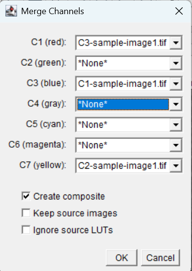
This will give:
run("Merge Channels...", "c1=C3-sample-image1.tif c3=C1-sample-image1.tif c7=C2-sample-image1.tif create");What is happening here?
c1=…, c2=…, c3=… … represent channel slots in the merge (Red = c1, Green = c2, Blue = c3, and so on). In reality, it doesn’t matter what color you choose, as long as you know which channel is which.
The filenames assigned to each slot (e.g., “C3-sample-image1.tif”) are the actual grayscale image windows open.
create means “create a new composite image from these inputs.”
However, we want to keep our code generic, so that when we have another image this code will still work. We can use the getTitle() function to get the name of the image. This way, we can use the same macro for any image.
title = getTitle(); // Get the title of the current image
run("Split Channels");
run("Merge Channels...", "c1=[C1-" + title + "] c2=[C2-" + title + "] c3=[C3-" + title + "] create");Take note of the capital letters and spaces. This is important in this case. Compare the recorder window output to this output.
- Open sample-image3.tif and re-run the above code. You should see another image window open with the merged channels without the ransmitted light channel.
🏁 Exiting the Macro
There are a number of ways to let a user know when the macro has completed.
- Display a pop-up window:
showMessage("Macro Complete", "All processing steps are done.");- Print a message in the FIJI log window:
print("Macro finished successfully.");- Make a sound:
beep();- Exit message:
exit("Done");Try each one and see what you like best. You can also combine them.
📂 Batch Processing Folders of Images
Now this macro only speeds up processing of individual images. Often we have tens to thousands of images to process. Even with this macro, opening each image individually and running the macro is time consuming. Instead, we can batch process folders of images using the same macro.
In batch processing you supply FIJI a set of files and a set of instructions, and it performs the same instructions on each file in the set and saves the results in a location of your choice.
Uses curly brackets {} (to denote a batch)
Using the existing macro, we can add a batch processing loop to the macro. This will allow us to process all images in a folder.
- Add the following to the macro above the line
run("Z Project...", "projection=[Max Intensity]");
// ===== Setup Directories =====
// Choose source directory and create subdirectories for CSV results and ROI images.
dir = getDirectory("Choose Source Directory of images");
resultsDir = dir+"CSV_results/";
File.makeDirectory(resultsDir);
// Process all .tif files in the source directory.
processFolder(dir);
function processFolder(dir) {
list = getFileList(dir);
list = Array.sort(list);
for (i = 0; i < list.length; i++) {
if (endsWith(list[i], ".tif")) {
processFile(dir, resultsDir, list[i]);
}
}
} dir is the source directory where the images are located. resultsDir is the directory where the results will be saved. The function File.makeDirectory(resultsDir) will make a new folder called CSV_results inside the dir filepath.
The processFolder() function processes all .tif files in the source directory. Here we a defining a function using curly braces { }. The processFile() function processes each file in the source directory. The for loop iterates through all files in the directory, and if the file ends with .tif, it calls the processFile() function to process that file.
list = getFileList(dir); gets a list of all files in the directory dir and stores it in the variable list.
list = Array.sort(list); This sorts the filenames alphabetically so that files are processed in a predictable order.
for (i = 0; i < list.length; i++) This is a loop that goes through each file in the list. The variable i is the index of the current file.
i = 0: Start at the first item in the list (position 0).i < list.length: Keep going as long as i is less than the total number of items in the list (number of images).i++: Increase i by 1 after each loop iteration (move to the next image).
🔍 Show Explanation
So, if your folder contains 5 files, this loop will run 5 times, and each time:
list[i]…
list[0] → first file
list[1] → second file
…
list[4] → fifth file
if (endsWith(list[i], ".tif")) { ... } This checks if the current file (list[i]) ends with “.tif”. If it does, the code inside the curly braces { } will run. This is a way to filter out files that are not images.
processFile(dir, resultsDir, list[i]); This calls the processFile() function to process the current file. The parameters passed to the function are:
dir: The source directory where the images are located.resultsDir: The directory where the results will be saved.list[i]: The name of the current file being processed.
processFile() is another function we will define later. It will contain the code that processes each image to your liking.
e.g. If your folder contains:
[“image1.tif”, “readme.txt”, “image2.tif”]
This loop will:
✅ Process image1.tif
❌ Skip readme.txt
✅ Process image2.tif
- Now lets delete the original line of code that allows the user to save the results to a certain file.
dir = getDirectory("Choose Destination Directory"); // remove this lineYou should have something like this:
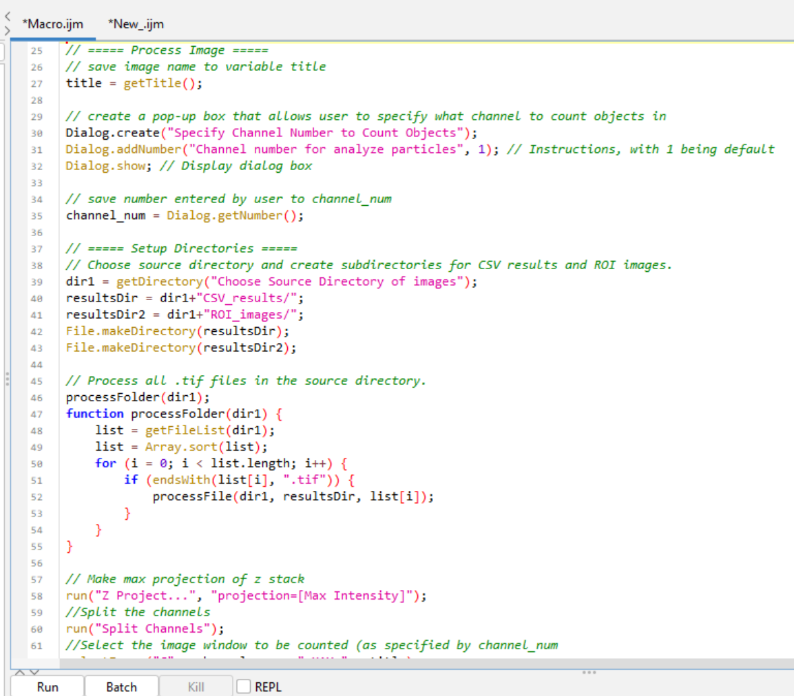
- Now we need to define the
processFile()function. This function will contain the code that processes each image. We can copy and paste the code from the original macro into this function. Just below ourprocessFolderfunction, add:
// ===== Process Each Image =====
function processFile(dir, resultsDir, file){
// Open the image and get its title.
open(dir + File.separator + file);
title = getTitle();This section of your macro defines a custom function called processFile(). This function is used to process one image at a time — and it gets called inside the loop that handles all .tif files that we defined above. The function takes three parameters:
dir: The source directory where the images are located.resultsDir: The directory where the results will be saved.file: The name of the current file being processed.
open(dir + File.separator + file); opens the image file. It builds the full file path using:
dir: folder path (e.g., “C:/Images/”)
File.separator: the slash (/ or , depending on operating system)
file: the image filename (e.g., “sample-image1.tif”)
🔍 Show Explanation
So if dir = “C:/Images” and file = “image1.tif”, this line becomes:
open("C:/Images/image1.tif");This opens the image file in FIJI.
title = getTitle(); After the image opens, this line stores the image’s title (window name) in a variable called title. This title will be used later in the macro for naming saved files or identifying what’s currently being processed.
Notice we have now defined
titletwice. Once inside ourprocessFile()function and once at the start of the macro. We can remove the first instance oftitle = getTitle();from the macro, as it is now defined inside theprocessFile()function.Now our previous code is nestled inside the
processFile()function. We need to add a closing curly brace } at the end of the macro to close the function. After the linesaveAs("Results", dir + "Summary_" + title + ".csv");add the closing curly brace }.Ah but wait! We need to change the
saveAs()lines to use the newresultsDirvariable we created earlier. This will save the results in the CSV_results folder we created at the start of the macro rather than where the images are stored. This keeps everything organised.
selectWindow("Results");
saveAs("Results", resultsDir + "Results_" + title + ".csv");
selectWindow("Summary");
saveAs("Results", resultsDir + "Summary_" + title + ".csv");- Now lets add some cleaning up code to close the image and clear the results before looping to the next image. This will help keep FIJI running smoothly and free up memory. At the end of the
processFile()function, add:
if (isOpen("Results")) close("Results");
if (isOpen("Summary")) close("Summary");
roiManager("Deselect"); // Ensure no ROIs are selected
close("*"); // Close all open images
// Sometimes windows need encouraging to close. So we can specfy them by name:
close("Results_" + title + ".csv");
close("Summary_" + title + ".csv");
close("ROI Manager");- Then outside of the closing curly brace } of the
processFile()function, we can add an exit message:
exit("Done");- Save the sample-image1.tif and sample-image2.tif to a folder. Then run the macro on the folder of images. Check the output files. You should see a new folder called CSV_results in the same directory as your images. Inside this folder should be the results and summary files for each image.
🔍 Show the full code
// USAGE: Use in FIJI
//
// Author: Marnie L Maddock (University of Wollongong)
// mmaddock@uow.edu.au, mlm715@uowmail.edu.au
// 5.07.2024
// Count number of Objects in a Channel
/*
This macro will take an image and:
1. Run a max projection,
2. Split the channels,
3. Unsharp mask,
4. Convert to binary,
5. Analyze particles (count objects),
6. Save the results and summary files.
*/
// Instructions
// Have a folder of tif images
// Press run on macro
// Select folder with tif images
// Specify which channel the objects you want to count
// Macro will automatically run. A pop-up box will appear once the macro has completed.
// ===== Setup Directories =====
// Choose source directory and create subdirectories for CSV results and ROI images.
dir = getDirectory("Choose Source Directory of images");
resultsDir = dir+"CSV_results/";
File.makeDirectory(resultsDir);
// create a pop-up box that allows user to specify what channel to count objects in
Dialog.create("Specify Channel Number to Count Objects");
Dialog.addNumber("Channel number for analyze particles", 1); // Instructions, with 1 being default
Dialog.show; // Display dialog box
// save number entered by user to channel_num
channel_num = Dialog.getNumber();
// Process all .tif files in the source directory.
processFolder(dir);
function processFolder(dir) {
list = getFileList(dir);
list = Array.sort(list);
for (i = 0; i < list.length; i++) {
if (endsWith(list[i], ".tif")) {
processFile(dir, resultsDir, list[i]);
}
}
}
// ===== Process Each Image =====
function processFile(dir, resultsDir, file){
// Open the image and get its title.
open(dir + File.separator + file);
title = getTitle();
// Make max projection of z stack
run("Z Project...", "projection=[Max Intensity]");
//Split the channels
run("Split Channels");
//Select the image window to be counted (as specified by channel_num
selectImage("C" + channel_num + "-MAX_" + title);
// Sharpen image using unsharp mask
run("Unsharp Mask...", "radius=1 mask=0.60");
// Make image binary
setOption("BlackBackground", true);
run("Convert to Mask");
// Count objects
run("Analyze Particles...", " show=Overlay display exclude clear summarize add");
// ===== Save Results =====
selectWindow("Results");
saveAs("Results", resultsDir + "Results_" + title + ".csv");
selectWindow("Summary");
saveAs("Results", resultsDir + "Summary_" + title + ".csv");
if (isOpen("Results")) close("Results");
if (isOpen("Summary")) close("Summary");
roiManager("Deselect"); // Ensure no ROIs are selected
close("*"); // Close all open images
// Sometimes windows need encouraging to close. So we can specfy them by name:
close("Results_" + title + ".csv");
close("Summary_" + title + ".csv");
close("ROI Manager");
}
exit("Done");It runs so fast! It is now processing all images in the folder and saving the results in a new folder called CSV_results. This is a great start to automating analysis.
📖 Final Touches
📄 Add a License
If you are sharing your code, you may want to add a license. A license tells other people:
- ✅ What they can and can’t do with your code
- ✅ Whether they can reuse it in their own projects
- ✅ How they should give you credit
Some popular licenses include:
- MIT License – very open and permissive
- GPL (General Public License) – requires derived code to also be open
- Creative Commons (e.g. CC-BY) – common for educational material and data
🧭 You can explore license types at choosealicense.com
We can add a license to our code by creating a file called LICENSE in the same folder as our macro. This file should contain the text of the license you choose. Otherwise, you can directly copy the lisence info to the top of the macro. For example, if you choose the MIT License, your LICENSE file or text would look like this:
MIT License
Copyright (c) 2024 Marnie L Maddock
Permission is hereby granted, free of charge, to any person obtaining a copy of this software and associated documentation files (the “Software”),
to deal in the Software without restriction, including without limitation the rights to use, copy, modify, merge, publish, distribute, sublicense,
and/or sell copies of the Software, and to permit persons to whom the Software is furnished to do so, subject to the following conditions:
The above copyright notice and this permission notice shall be included in all copies or substantial portions of the Software.
THE SOFTWARE IS PROVIDED “AS IS”, WITHOUT WARRANTY OF ANY KIND, EXPRESS OR IMPLIED, INCLUDING BUT NOT LIMITED TO THE WARRANTIES OF MERCHANTABILITY,
FITNESS FOR A PARTICULAR PURPOSE AND NONINFRINGEMENT. IN NO EVENT SHALL THE AUTHORS OR COPYRIGHT HOLDERS BE LIABLE FOR ANY CLAIM, DAMAGES OR OTHER LIABILITY, WHETHER IN AN ACTION OF CONTRACT, TORT OR OTHERWISE, ARISING FROM, OUT OF OR IN CONNECTION WITH THE SOFTWARE OR THE USE OR OTHER DEALINGS IN THE SOFTWARE.🛠️ Troubleshooting
Writing macros is a learning process, and errors are very normal! When something goes wrong, ImageJ usually gives you an error message that helps you figure out what’s wrong.
Spelling — Make sure all function names (like
run,Dialog.create) and variable names are spelled correctly.Brackets — Check that every opening
(,{, or[has a matching closing one.Capitalization —
Dialog.getString()is not the same asdialog.getstring()— ImageJ is case-sensitive!Semicolons — Most lines must end with a
;. Forgetting one is one of the most common causes of errors.Quotes for Strings — Strings must be wrapped in double quotes:
"Hello"notHello.Line Numbers in Errors — The error message usually tells you what line it occurred on, but it’s not always exact — check the lines just above and below too.
Start small — If you’re stuck, comment out sections of your macro and run it in smaller chunks.
Use
print()for debugging — You can print variables to the log to see what values are being stored.use wait() to slow down the macro if it is running too fast. This can help you see what is happening at each step. Is useful for debugging and for running your analysis.
If you don’t know where to start, or how to write a piece of code, start by using the macro recorder. The macro recorder will record your actions in FIJI and give you a starting point.
Before running on a full dataset, make sure the macro works on a single image.
If your macro is running slowly, restart FIJI or your computer to clear memory. Often macros run faster when you have less open, so if you have images building up that do not close, add lines of code that close the image before looping to the next image.
I find my macros run much faster if I do not have Google chrome open, chrome eats up so much of your RAM…
📦 A note about .lif files
If you have .lif files, these need to be converted to individual .tif images prior to batch processing.
If you are using .lif files, you can use the Lif-to-Tif macro to convert them to .tif files. This macro will open the .lif file and save each image in the file as a separate .tif file. This macro was created by Alexandre Hego: alexandre.hego@uliege.be. It works really well for .lif project files, including .lif files with tilescans. I have added this macro to my GitHub page for accessibility Lif-to-Tif.
🔗 Explore My Macro Collection
If you are looking for inspiration, or want to see some examples of macros I have made, check out my GitHub page. These get updated regularly. Try running them yourself with the provided sample images in each repository to see how they work. Make sure to read the README file before starting! Feel free to use these macros for analysing your own images if applicable. However, please cite the work if you do so. Refer to the license file in each repository for more information.
If you come across any issues, or want some features added to the macros, please let me know. Requests can be made through GitHub by going to the repository and clicking on the issues tab. Here you can submit a request for a new feature, or report a bug.
Currently available macros include:
More to come!
Feedback
If you’ve found this resource useful, please consider sharing it with your colleagues, students, or lab mates. The more people who benefit from it, the better!
I’m always looking to improve this guide. If you:
- 🐛 Found a bug or error in the macro code
- ❓ Think a topic could be explained better
- 📚 Have a suggestion for a new section or feature
- 💡 Created your own macro and want to contribute it
…I would love to hear from you!
You can submit feedback or suggest changes by opening an issue on GitHub.
🛠️ Don’t worry if you’re not a GitHub pro — even just pointing out a typo is helpful!
Thank you for helping make this guide better for everyone!
Contacts
If you have any questions, comments, or suggestions, please feel free to reach out to me:
The FIJI-macro-tutorial is housed here
The repository for this project is available here
LICENSE
FIJI-macro-tutorial by Marnie Maddock is licensed under CC BY 4.0